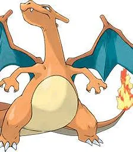

Charizard is a large, draconic Pokémon that differs greatly from its pre-evolved forms. The red skin coloration of Charmeleon is no longer apparent, as Charizard appears to have reverted to the orange/yellow coloration of Charmander. Two large fangs can be seen when its mouth is closed. When its mouth is open, its lower fangs and a slender but long tongue can be seen. The single horn that was on the back of its head is now two, one on either side. The most notable difference between Charizard and its pre-evolved forms are the large wings that have developed on its back, which gives Charizard the capability of flying.